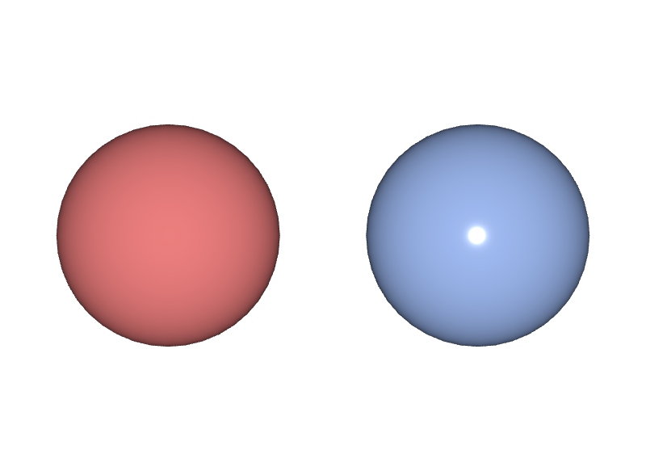
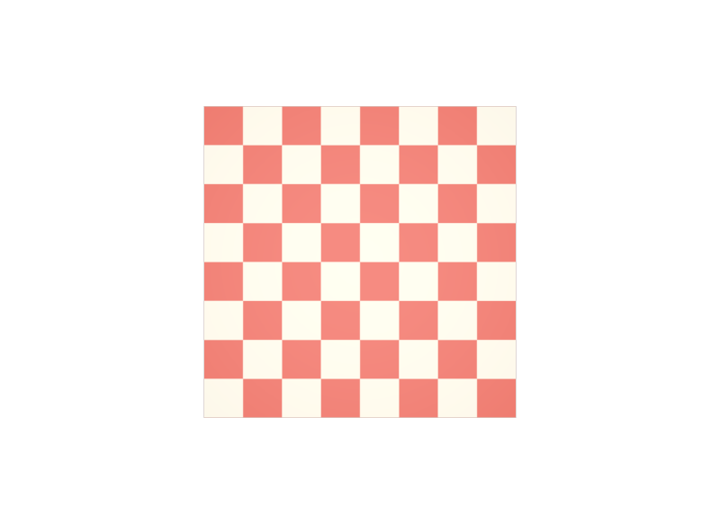

Materialのoutputs:surfaceをつなぎ忘れる
ShaderをMaterialの中に置いただけでは、何も起きません。outputs:surface.connectで明示的につないで初めて、そのShaderがMaterialの表面として使われます。中に入れれば自動でつながる、という仕組みではありません。
STEP 32 · USDSHADE BASICS
Materialは窓口、Shaderが中身です
今日これだけ
公式情報に基づく説明
見た目を記述する仕組みがUsdShadeです。ここで覚えるPrimは2つだけです。
Materialは、見た目のひとまとまりに名前を付けて外から参照できるようにするPrimです。Materialそのものは色や質感を計算しません。「このMaterialの表面はこれです」という出力の口を持つだけです。この口がoutputs:surfaceです。
Shaderは、実際の計算をする1つのノードです。どの計算をするかはuniform token info:idで指定します。info:id = "UsdPreviewSurface"と書けば、OpenUSDが標準で定めている汎用のサーフェスシェーダになります。
両者は接続（Connection）でつながります。outputs:surface.connectのように、Property名の後ろに.connectを付けて、つなぎ先のProperty Pathを書きます。これはSTEP 06で見たRelationshipとは別の仕組みで、Attribute同士を結ぶためのものです。
Diagram
rel material:bindingで Material を指すoutputs:surfaceという出力の口を持つinfo:idで計算の種類、inputs:*で値USDA
def Scope "Looks"
{
def Material "MattePaint"
{
token outputs:surface.connect = </World/Looks/MattePaint/PBR.outputs:surface>
def Shader "PBR"
{
uniform token info:id = "UsdPreviewSurface"
color3f inputs:diffuseColor = (0.85, 0.2, 0.2)
float inputs:roughness = 0.9
float inputs:metallic = 0
token outputs:surface
}
}
def Material "GlossyPaint"
{
token outputs:surface.connect = </World/Looks/GlossyPaint/PBR.outputs:surface>
def Shader "PBR"
{
uniform token info:id = "UsdPreviewSurface"
color3f inputs:diffuseColor = (0.35, 0.5, 0.9)
float inputs:roughness = 0.15
float inputs:metallic = 0
token outputs:surface
}
}
}
def Sphere "Left" (
prepend apiSchemas = ["MaterialBindingAPI"]
)
{
double radius = 0.7
rel material:binding = </World/Looks/MattePaint>
}読むときの手がかりは接頭辞です。inputs:で始まるものはそのShaderへ入れる値、outputs:で始まるものはそのPrimが外へ出す値です。Shader側のtoken outputs:surfaceは値を持たない宣言で、「ここに出口がある」と示すためだけに書きます。
Material・ShaderをLooksという名前のScopeへまとめるのは慣習で、規則ではありません。ただ、ほとんどのAssetがこの名前を使うので、揃えておくと探しやすくなります。
結果

roughness = 0.9、右はroughness = 0.15です。値が小さいほど反射がまとまり、ハイライトが小さく鋭くなります。examples/lesson-46/material.usda / Apple USD Tools 0.25.2 のusdrecord（Hydra Storm・Metal）/ macOS 26.5.2・Apple M4UsdPreviewSurface
Rendererごとに専用のShaderがありますが、それを書くと他のツールで開いたときに再現されません。UsdPreviewSurfaceは、その差を埋めるためにOpenUSDが定めた標準のサーフェスシェーダです。交換用のAssetでは、まずこれで見た目を記述します。よく使う入力は次のとおりです。
| 入力 | 型 | 既定値 | 意味 |
|---|---|---|---|
diffuseColor | color3f | (0.18, 0.18, 0.18) | 拡散反射の色。いわゆる基本の色 |
roughness | float | 0.5 | 表面の粗さ。0でつやつや、1でつや消し |
metallic | float | 0.0 | 金属かどうか。0か1のどちらかにするのが基本 |
opacity | float | 1.0 | 不透明度。1で不透明 |
emissiveColor | color3f | (0, 0, 0) | 自分から出す光の色 |
normal | normal3f | (0, 0, 1) | 法線。テクスチャで細かい凹凸を足すときに使う |
ior | float | 1.5 | 屈折率 |
出力はsurfaceとdisplacementの2つです。上の表の既定値は、実行環境のSdr.Registryから読み出したものです。書かなかった入力にはこの値が使われます。
Python
from pxr import Gf, Sdf, Usd, UsdGeom, UsdShade
stage = Usd.Stage.CreateNew("mat.usda")
UsdGeom.Xform.Define(stage, "/World")
mesh = UsdGeom.Mesh.Define(stage, "/World/Panel")
material = UsdShade.Material.Define(stage, "/World/Looks/Paint")
shader = UsdShade.Shader.Define(stage, "/World/Looks/Paint/PBR")
shader.CreateIdAttr("UsdPreviewSurface")
shader.CreateInput("diffuseColor", Sdf.ValueTypeNames.Color3f).Set(Gf.Vec3f(0.8, 0.2, 0.2))
shader.CreateInput("roughness", Sdf.ValueTypeNames.Float).Set(0.4)
# Material の出力を Shader の出力へつなぐ
material.CreateSurfaceOutput().ConnectToSource(shader.ConnectableAPI(), "surface")
# 形の側から Material を指す
UsdShade.MaterialBindingAPI.Apply(mesh.GetPrim()).Bind(material)
out = material.GetSurfaceOutput()
print("output 名 :", out.GetFullName())
print("接続あり? :", out.HasConnectedSource())
source, name, kind = out.GetConnectedSource()
print("接続先 :", source.GetPath(), "/ output:", name, "/ 種類:", kind)
print("info:id :", shader.GetIdAttr().Get())
stage.Save()output 名 : outputs:surface
接続あり? : True
接続先 : /World/Looks/Paint/PBR / output: surface / 種類: Output
info:id : UsdPreviewSurfaceConnectToSourceが接続を作り、GetConnectedSourceが逆にたどります。変換したデータを検証するときは、このHasConnectedSource()がFalseになっていないかを見ると、つなぎ忘れをすぐ見つけられます。
USDA → Python mapping
USDA
def Material "Paint"↓Python
UsdShade.Material.Define(stage, "/World/Looks/Paint")USDA
uniform token info:id = "UsdPreviewSurface"↓Python
shader.CreateIdAttr("UsdPreviewSurface")USDA
color3f inputs:diffuseColor = (0.8, 0.2, 0.2)↓Python
shader.CreateInput("diffuseColor", Sdf.ValueTypeNames.Color3f).Set(...)USDA
token outputs:surface.connect = <.../PBR.outputs:surface>↓Python
material.CreateSurfaceOutput().ConnectToSource(shader.ConnectableAPI(), "surface")Shaderをつなぐ
Shaderは1つとは限りません。テクスチャを貼るときは3つのShaderが並びます。ここでSTEP 22のトポロジとSTEP 29のfaceVaryingがつながります。
def Material "Checker"
{
token outputs:surface.connect = </World/Looks/Checker/PBR.outputs:surface>
# 1. Mesh の primvars:st を読み出す
def Shader "STReader"
{
uniform token info:id = "UsdPrimvarReader_float2"
string inputs:varname = "st"
float2 outputs:result
}
# 2. 読み出した UV で画像をサンプリングする
def Shader "Tex"
{
uniform token info:id = "UsdUVTexture"
asset inputs:file = @checker.png@
float2 inputs:st.connect = </World/Looks/Checker/STReader.outputs:result>
token inputs:wrapS = "repeat"
token inputs:wrapT = "repeat"
float3 outputs:rgb
}
# 3. サンプリング結果を diffuseColor へつなぐ
def Shader "PBR"
{
uniform token info:id = "UsdPreviewSurface"
color3f inputs:diffuseColor.connect = </World/Looks/Checker/Tex.outputs:rgb>
float inputs:roughness = 0.5
token outputs:surface
}
}
def Mesh "Panel" (
prepend apiSchemas = ["MaterialBindingAPI"]
)
{
uniform token subdivisionScheme = "none"
int[] faceVertexCounts = [4]
int[] faceVertexIndices = [0, 1, 2, 3]
point3f[] points = [(-1, -1, 0), (1, -1, 0), (1, 1, 0), (-1, 1, 0)]
texCoord2f[] primvars:st = [(0, 0), (1, 0), (1, 1), (0, 1)] (
interpolation = "faceVarying"
)
rel material:binding = </World/Looks/Checker>
}値の流れはprimvars:st → STReader → Tex → PBRです。UsdPrimvarReader_float2のvarnameに書いた"st"が、Mesh側のprimvars:stという名前と一致していることが要です。ここが食い違うと、テクスチャは貼られず既定色のままになります。

stを4個書き、UVの範囲(0,0)〜(1,1)に画像を1枚分割り当てた結果です。examples/lesson-46/texture.usda / Apple USD Tools 0.25.2 のusdrecord（Hydra Storm・Metal）/ macOS 26.5.2・Apple M4Beginner notes
よくある間違い
ShaderをMaterialの中に置いただけでは、何も起きません。outputs:surface.connectで明示的につないで初めて、そのShaderがMaterialの表面として使われます。中に入れれば自動でつながる、という仕組みではありません。
つなぐ相手はPropertyです。</World/Looks/Paint/PBR>ではなく、</World/Looks/Paint/PBR.outputs:surface>のようにドットの後ろまで必要です。
UsdPrimvarReader_*のvarnameはstringです。tokenで書くとusdcheckerがIncorrect type for ... inputs:varname. Expected 'string'; got 'token'.と報告します。見た目には同じ文字列なので、実行だけでは気付きにくい間違いです。
varname = "st"と書いたなら、Mesh側はprimvars:stである必要があります。primvars:st0やprimvars:UVMapのままだと、エラーにはならず、ただテクスチャが出ません。
UsdShadeでは、この接頭辞が入力と出力を区別する唯一の手がかりです。diffuseColorとだけ書くと、Shaderの入力としては認識されません。
Glossary
info:idでどの計算かを指定する。UsdPreviewSurfaceなど。inputs:で始まる。outputs:で始まる。.connectを付けて接続先のProperty Pathを書く。rgb・r・g・b・a。UsdPrimvarReader_float2などがある。@ @で囲んで書く、外部ファイルの場所。rel material:bindingが使えるようになる。Official references
確認日: